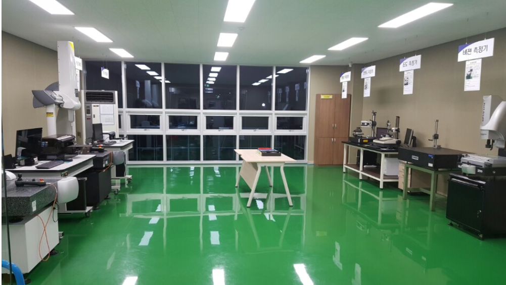
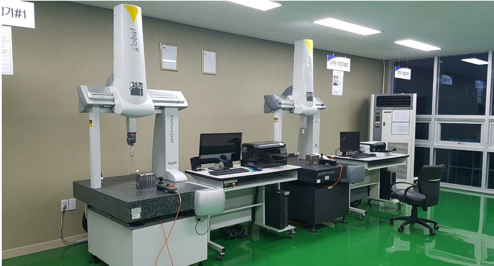
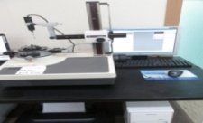
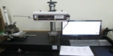
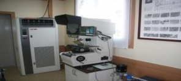
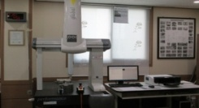

CNC 자동 선반
현대 위아 WIA E-200 외 50대, 두산 PUMA-160GL 외 2대를 운영합니다.
생산설비, 자동화 대응설비, 정밀 계측기를 기반으로 고객 요구 수준의 품질과 생산효율을 동시에 확보하고 있습니다.
현대 위아 WIA E-200 외 50대, 두산 PUMA-160GL 외 2대를 운영합니다.

현대 위아 및 두산 장비 기반으로 총 18대를 운영합니다.

공정 후 검사 및 납품 대응을 위한 검사·포장 프로세스를 운영합니다.
생산성과 안정적인 양산 대응을 위한 주요 설비 보유 현황입니다.
| 설비명 | MAKER | MODEL / 특징 | 보유 |
|---|---|---|---|
| CNC 자동 선반 | 현대 위아 | WIA E-200 외 | 50대 |
| CNC 자동 선반 | 두산인프라코어 | PUMA-160GL 외 | 2대 |
| MCT | 현대 위아 / 두산인프라코어 | I CUT-400T / VC-430 외 | 18대 |
| 양면 연마기 | 에이엠테크놀리지 | ADG-700 | 1대 |
| BRUSH 기 | 자작(이오닉스) | IONICS-01 외 | 4대 |
| 초음파 세척기 | 자작(DH테크) | DH-CLEAN-01 | 1대 |





